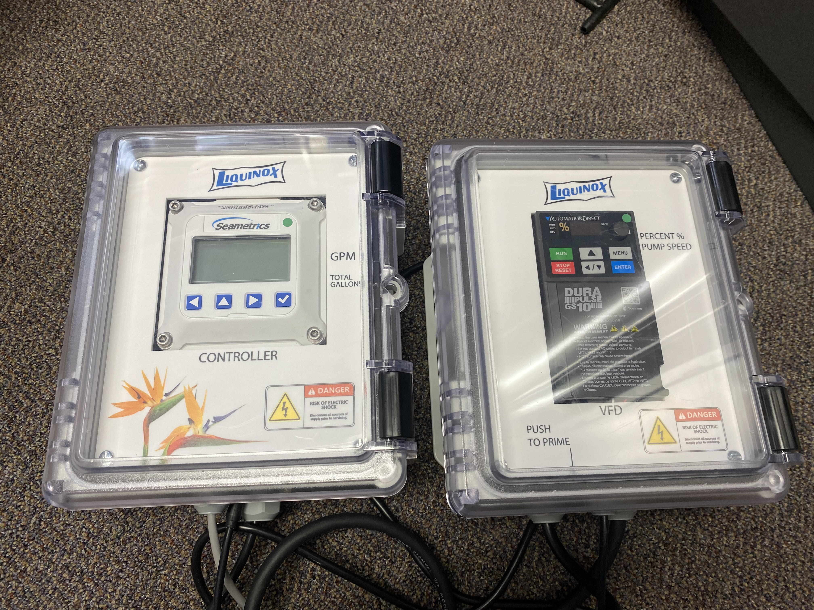
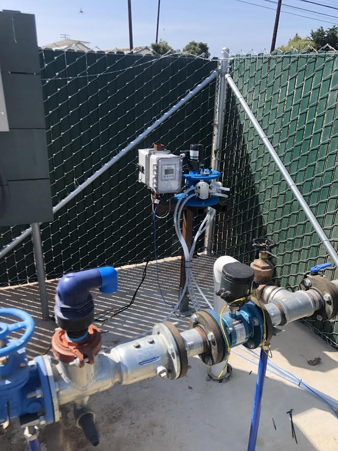
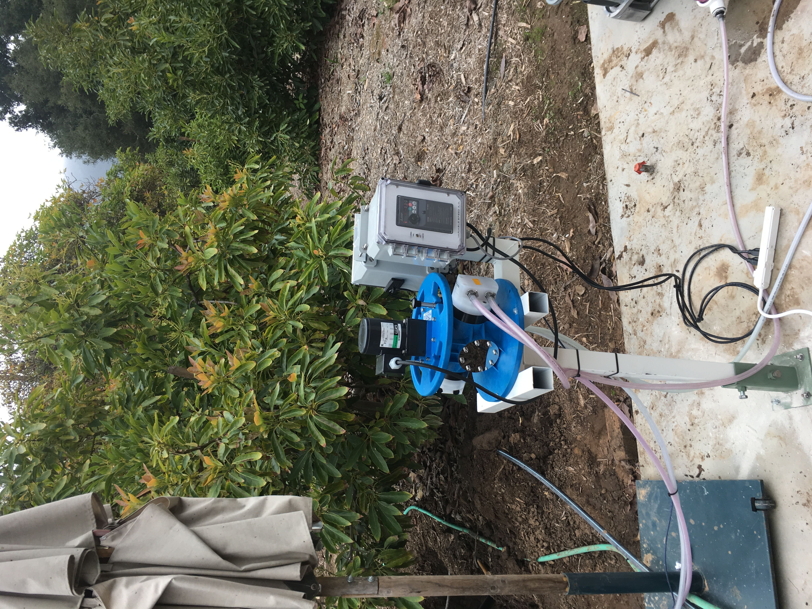
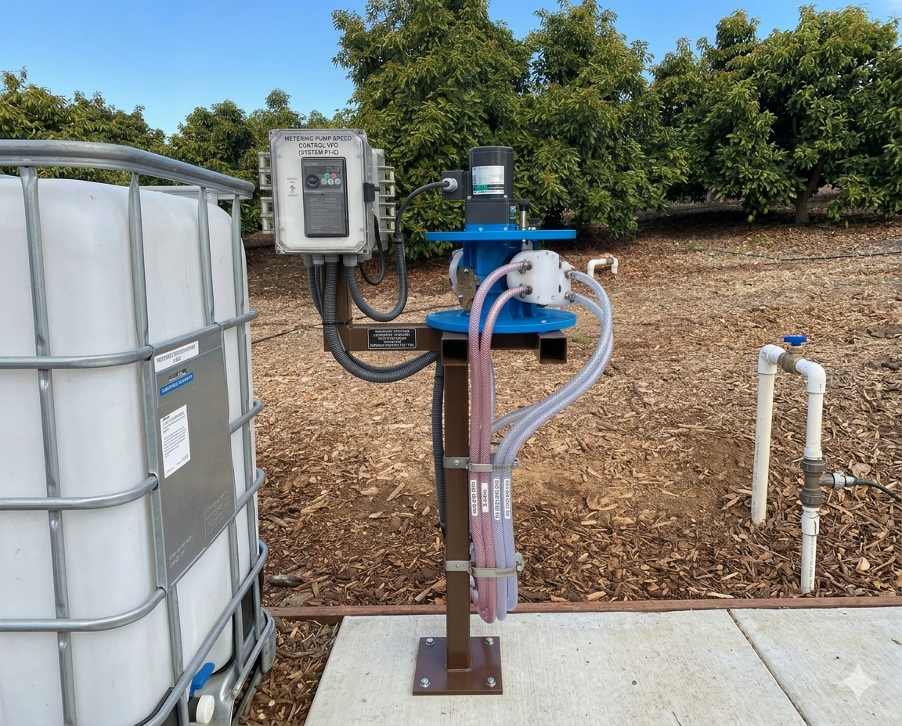
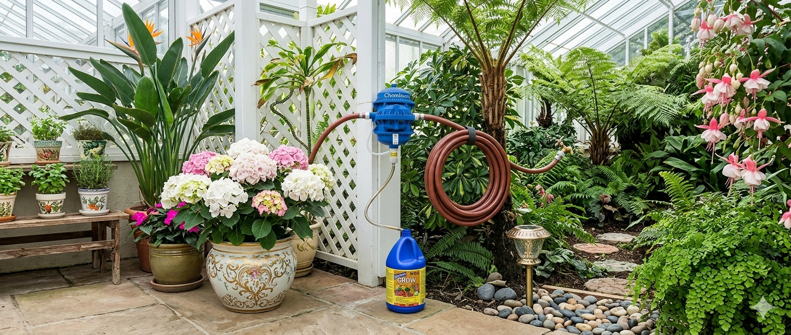

Product Overview
Why Professionals Choose Ozawa
Five reasons commercial growers, golf course superintendents, and irrigation contractors have trusted Ozawa injection pumps since 1986.
01
Versatile Metering
The Ozawa's adjustment range — from ounces per hour up to 56 GPH — means a single pump configuration handles seedling nurseries and large-scale pivot systems alike. No two operations have the same fertigation needs, and the Ozawa doesn't force a compromise.
Each pump head has five clearly marked adjustment positions at 20% increments. Changing ratios in the field takes seconds — no tools required.
- Flow range: trace amounts up to 56 GPH (model dependent)
- Five adjustment positions per head in 20% increments
- Up to 4 independent heads, each individually adjustable
- Flow-paced operation via 450 sensor + 410 controller
- 24V DC variable-speed drive for automated programs


02
High Efficiency
A 1/18 HP motor powers all four pump heads simultaneously at maximum output — consuming less than 100 watts total. Over an irrigation season, that efficiency translates to meaningful savings on electricity versus competing systems.
The 24V DC motor option integrates with solar panels for completely off-grid operation, eliminating power costs entirely in remote field locations.
- Less than 100 watts at full output across all four heads
- 1/18 HP motor — compact and lightweight
- 24V DC option for solar or battery-powered systems
- Low heat generation — no cooling requirements
03
Accurate & Reliable
Positive displacement piston pumps are the gold standard for precision metering — they deliver a fixed volume per stroke regardless of downstream pressure variations. The Ozawa design uses an eccentric shaft, roller, and piston arrangement that maintains accuracy across the full operating range.
O-ring check valves prevent back-siphon and keep the injection stream consistent even when line pressure fluctuates.
- Positive displacement piston pump — fixed volume per stroke
- Eccentric shaft and roller design for smooth, consistent output
- O-ring check valves prevent back-siphon
- Accurate across the full 0–150 PSI (or 0–180 PSI) operating range


04
Maintenance-Free Design
Equipment downtime during the growing season is not an option. The Ozawa was engineered from the ground up to operate without scheduled maintenance — no oil changes, no bearing lubrication, no periodic seal replacements under normal use.
Sealed bearings packed with self-lubricating materials last for years of continuous operation. O-ring check valve components are simple to inspect and replace without specialized tools.
- Sealed bearings with self-lubricating materials — no greasing required
- No scheduled maintenance intervals under normal operation
- Simple O-ring check valve design — easy field inspection
- Self-priming — no manual priming after dry-run or restart
- Operates at any angle or orientation without modification
05
Proven Performance Since 1986
The Ozawa pump has been field-tested in commercial agriculture continuously since 1986 — over 35 years of real-world operation across vegetable farms, golf courses, nurseries, and irrigation systems throughout the United States.
Liquinox has been the trusted Ozawa distributor and service partner throughout that history, providing system design support, installation guidance, and ongoing technical assistance from our facility in Orange, CA.
- Field-proven since 1986 across diverse commercial applications
- Trusted by vegetable growers, golf courses, and nurseries nationwide
- Distributed and supported by Liquinox — Orange, CA
- Made in the USA
